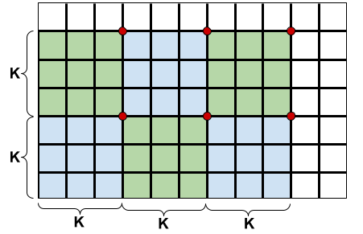
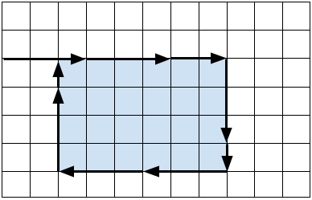

In what follows, let us suppose that the delicious part of the cake has $$$n$$$ rows and $$$m$$$ columns.
When $$$\mathbf{K}=1$$$, we must consider two cases. If the delicious part is fully inside the cake, meaning that the outer cells are not delicious, then all grid lines around the delicious cells must be cut. Specifically, there are $$$n+1$$$ grid lines of length $$$m$$$ and $$$m+1$$$ grid lines of length $$$n$$$, so the answer is $$$n(m+1)+m(n+1)=2nm+n+m$$$ plus the minimum distance to cut from the border to the delicious part. On the other hand, if the delicious part shares some border with the whole cake, then the answer is $$$2nm+n+m$$$ minus the length of the shared border. The time complexity is $$$O(1)$$$.
Let us start out simple. Suppose a cake of size $$$n \times m$$$ is entirely delicious and needs to be cut into $$$1 \times 1$$$ squares. This means that we need to cut the cake along all internal grid lines, which are marked bold in the following picture. Moreover, suppose for the moment that our knife is infinitely long. One way to cut the cake would be to make $$$n-1$$$ horizontal cuts and then make $$$m-1$$$ vertical cuts for each of the resulting $$$n$$$ horizontal strips. This strategy amounts to $$$n-1+n(m-1)=nm-1$$$ cuts. If we start with $$$m-1$$$ long vertical cuts first, then we would need $$$n-1$$$ horizontal cuts for each of the $$$m$$$ vertical strips, which again results in $$$m-1+m(n-1)=nm-1$$$ cuts.
Can we do any better? No. In order to prove this claim, let us consider the worst case scenario where we make cuts of length $$$1$$$ only, which means $$$n(m-1)+m(n-1)=2nm-n-m$$$ cuts in total. Since we have a very long knife, we can try to combine or merge some of those unit cuts into longer cuts. Now, at each internal grid point, we can merge the two vertical cuts meeting at that point or the two horizontal cuts, but not both. Thus, we can save at most one cut at each internal grid point. There are $$$(n-1)(m-1)=nm-n-m+1$$$ internal grid points, which is how many cuts we can possibly save. It follows that we need at least $$$2nm-n-m-(nm-n-m+1)=nm-1$$$ cuts to divide the cake into unit squares.
Now that we know how to cut a fully delicious cake with a sufficiently long knife (i.e. $$$\mathbf{K} \ge n$$$ or $$$\mathbf{K} \ge m$$$), let us turn our attention to the case where the length of the knife is $$$\mathbf{K} \lt \min(n,m)$$$. With a cake this large, some cuts will necessarily terminate at a previously unexposed internal grid point. For convenience, we will call them red points. And if we continue the reasoning from the previous paragraph, the red points will not save a cut for us. In other words, as soon as we stop at a previously unexposed grid point, the three other grid lines meeting at that point will belong to different cuts with no chance of merging any two of them. Conversely, if a cut exposes an internal grid point without terminating at it, then that grid point belongs to just three different cuts and so one cut is saved. Consequently, we want to minimize the number of red points.
To prove a lower bound on the number of red points, let us consider $$$\lfloor \frac{n-1}{\mathbf{K}} \rfloor$$$ rows of $$$\mathbf{K} \times \mathbf{K}$$$ blocks, $$$\lfloor \frac{m-1}{\mathbf{K}} \rfloor$$$ blocks in each row as shown in the following picture for $$$\mathbf{K}=3$$$. If we consider the blocks open at the left and bottom sides and closed at the right and top sides, then each of the blocks contains $$$\mathbf{K} \times \mathbf{K}$$$ internal grid points and any two blocks are disjoint. One can easily verify that the very first cut that has a point common with a particular block will create a red point in that block. Since the blocks are disjoint, there will be at least $$$\lfloor \frac{n-1}{\mathbf{K}} \rfloor \times \lfloor \frac{m-1}{\mathbf{K}} \rfloor$$$ red points for any cutting strategy.
It turns out that for an optimal cutting strategy this is also the upper bound on the number of red points. One way of achieving this bound is to select the top-right corner of each block as the red point, cut out the blocks with $$$2\lfloor \frac{n-1}{\mathbf{K}} \rfloor \times \lfloor \frac{m-1}{\mathbf{K}} \rfloor$$$ full cuts, and finally cut all the blocks and the L-shaped remaining part into unit squares without ever terminating at a previously unexposed grid point (i.e. without introducing new red points). Recall that every internal grid point that is not red saves us one cut. It follows that the minimum number of cuts to partition a fully delicious cake is $$$nm-1+\lfloor \frac{n-1}{\mathbf{K}} \rfloor \times \lfloor \frac{m-1}{\mathbf{K}} \rfloor$$$. Note that the case with a sufficiently long knife is a special case of this formula, as $$$\lfloor \frac{n-1}{\mathbf{K}} \rfloor \times \lfloor \frac{m-1}{\mathbf{K}} \rfloor=0$$$.
It remains to solve the problem for a cake that is partially not delicious. Intuitively, it seems reasonable to cut out the delicious rectangle first and then proceed with the above strategy to partition the delicious part into unit squares. To cut out the delicious rectangle, we should start cutting from the outer border of the cake towards one of the corners of the delicious rectangle and then cut around the rectangle as shown in the following picture for $$$\mathbf{K}=3$$$. There are eight symmetric variants to try and we take the minimum number of cuts obtained this way. We should be careful, though, not to include any sides of the delicious rectangle that are touching the border of the whole cake.
A skeptical reader might ask whether it could be worth considering a cutting strategy where we start from the outer border and cut towards somewhere in the middle of the delicious rectangle. If the distance from the border to the delicious rectangle is not divisible by $$$\mathbf{K}$$$, then the last step would cut right into the delicious part and perhaps save one cut for the internal grid lines of the delicious rectangle. It can be shown, however, that we would need one extra cut for the outline in this case, so overall we would not gain anything. The proof of this claim is technical yet not very interesting, so it is left for the reader as an exercise.
The time complexity of the solution for Test Set 2 is still $$$O(1)$$$.